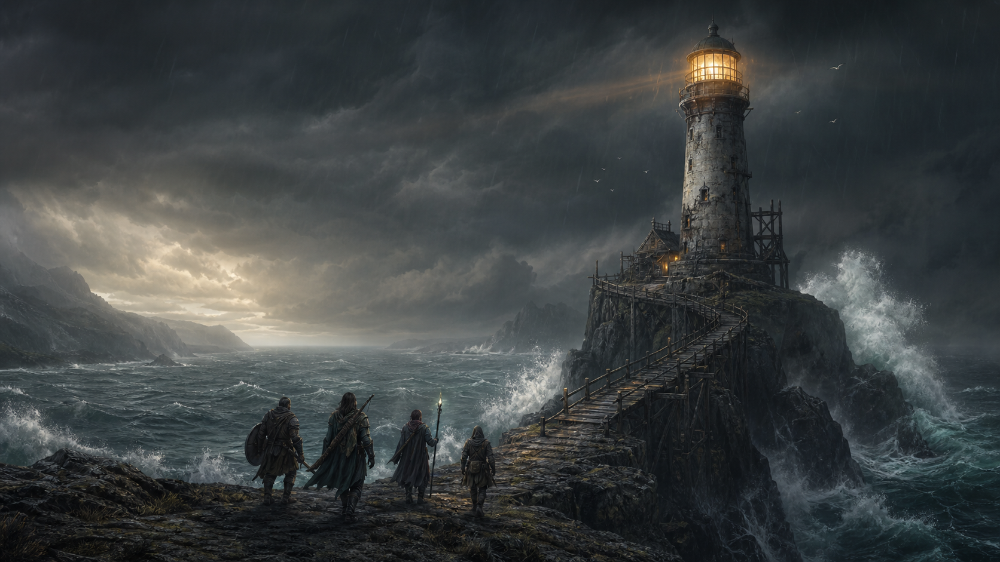

Four complete sessions
Ten-to-fifteen-minute preparation, 160 playable minutes per session, and clear break conditions.

Loot Table Works campaign book
A four-session system-neutral fantasy campaign
A false warning light turns one rescue into a fight over evidence, memory, and who gets to write the next harbor charter.
Retail release in progress across direct stores and major book retailers. No draft checkout links are exposed.
Campaign trajectory
The opening one-shot resolves tonight. Its outcome becomes the evidence, pressure, and political starting position for the next three sessions.
Stop the false harbor code, save the answering ship, and decide the fate of Orren and the beacon.
Secure the unaltered relief ledger before the Compact seals it or the harbor destroys its value.
Recover the complete cargo bearings and establish a custody rule for the old warning network.
Distribute the stolen relief, settle the warning network, and write a charter shaped by the table.
Inside the full edition
Each session has a visible objective, five timed scenes, fail-forward clues, pressure clocks, scaling guidance, and an explicit handoff to the next table night.
Ten-to-fifteen-minute preparation, 160 playable minutes per session, and clear break conditions.
Shared objectives, opposed clocks, clue guarantees, and consequences that fit the rules already at your table.
Beacon player and GM maps plus diagrams for the Ledger House, Drowned Relay, and Tidecourt Drydock.
Four Beacon outcomes, continuity worksheets, faction positions, reward references, and campaign-workspace saves.
Product contract
Gullwatch Harbor is original, system-neutral fantasy content. It includes no outside characters, settings, rules statistics, compatibility claims, or required subscription service.

Retail status
The edition has passed PDF, EPUB, layout, content, and independent visual review. Verified buyer links will appear here only after the exact files and native previews pass on each retailer.